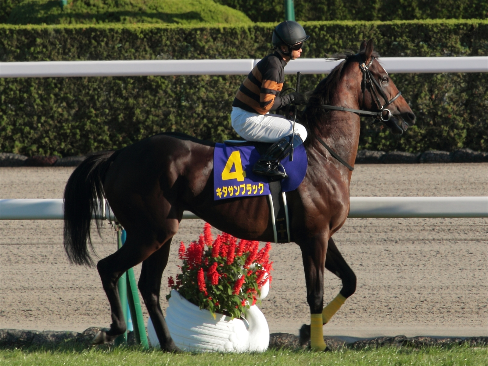
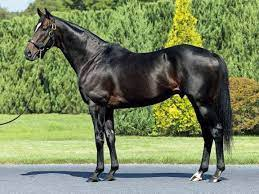
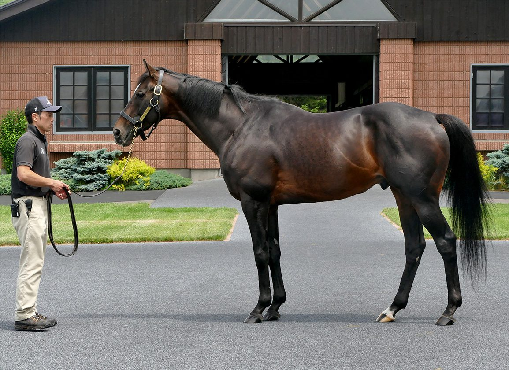

Kitasan Black adalah salah satu kuda pacu ras murni (Thoroughbred) paling
legendaris dalam sejarah balap kuda Jepang (JRA). Dikenal dengan stamina yang luar biasa,
ketangguhan fisiknya, dan kemampuannya mendominasi balapan dari posisi depan, Kitasan Black
mencatatkan sejarah dengan menyamai rekor 7 kemenangan Grade 1 (G1) dan sempat memegang
rekor pendapatan tertinggi sepanjang masa di Jepang.

Statistik Balapan & Pendapatan
20
Total Balapan
12
Kemenangan
7
Grade 1 (G1)
¥1.87M
Total Pendapatan (Miliar JPY)
Gelar Kehormatan
- JRA Horse of the Year (2016 & 2017)
- JRA Best Older Male Horse (2016 & 2017)
- JRA Hall of Fame (2020)
Tabel Kemenangan Grade 1 (G1)
| Tahun |
Nama Balapan |
Jarak |
Trek |
Joki |
| 2015 |
Kikuka Sho (Japanese St. Leger) |
3000m |
Turf |
Hiroshi Kitamura |
| 2016 |
Tenno Sho (Spring) |
3200m |
Turf |
Yutaka Take |
| 2016 |
Japan Cup |
2400m |
Turf |
Yutaka Take |
| 2017 |
Osaka Hai |
2000m |
Turf |
Yutaka Take |
| 2017 |
Tenno Sho (Spring) |
3200m |
Turf |
Yutaka Take |
| 2017 |
Tenno Sho (Autumn) |
2000m |
Turf |
Yutaka Take |
| 2017 |
Arima Kinen (The Grand Prix) |
2500m |
Turf |
Yutaka Take |
Gaya Balap & Keunggulan

Kitasan Black dikenal dengan gaya balap Front-Runner — berlari di
barisan paling depan dan mengatur tempo balapan. Berbeda dengan kuda seperti Deep Impact
yang mengandalkan ledakan kecepatan di detik terakhir, Kitasan Black unggul dalam
stamina absolut dan cruising speed yang sangat tinggi.
Fakta uniknya, kakeknya (Sakura Bakushin O) adalah kuda Sprinter jarak pendek. Biasanya,
keturunan sprinter tidak kuat berlari jarak jauh. Namun Kitasan Black mematahkan ekspektasi
dengan menjadi Stayer tangguh — memenangkan Tenno Sho Spring (3200m) dua kali berturut-turut!
Pelatihnya, Hisashi Shimizu, menerapkan porsi latihan yang sangat keras di tanjakan bukit
(hill training). Hasilnya, Kitasan Black tidak pernah mengalami cedera serius
sepanjang kariernya.
Karier Pejantan (Stallion)

Setelah pensiun dengan kemenangan emosional di Arima Kinen (Desember 2017), Kitasan Black
memulai karier sebagai pejantan di Shadai Stallion Station. Ia terbukti
menjadi salah satu sire paling sukses di era modern, dengan keturunan-keturunan juara:
- Equinox — "Longines World's Best Racehorse 2023", pemenang Japan Cup, Tenno Sho Autumn, dan Dubai Sheema Classic.
- Sol Oriens — Pemenang Satsuki Sho (Japanese 2000 Guineas) 2023.
- Croix du Nord — Pemenang Tokyo Yushun (Japanese Derby) 2025.
Timeline Karier
2015
Debut & G1 Pertama
Memulai karier balapan. Tidak terlalu diunggulkan, namun mengejutkan semua orang dengan memenangkan G1 pertamanya di Kikuka Sho (3000m).
2016
Berpasangan dengan Yutaka Take
Mulai berpasangan dengan joki legendaris Yutaka Take. Mendominasi sirkuit dengan memenangkan Tenno Sho Spring dan Japan Cup. Dinobatkan sebagai JRA Horse of the Year.
2017
Tahun Kejayaan & Pensiun
Meraih 4 kemenangan G1 dalam satu tahun. Pemiliknya, Saburo Kitajima, menyanyikan lagu "Matsuri" di hadapan puluhan ribu penonton saat Kitasan Black memenangkan balapan terakhirnya di Arima Kinen. Pensiun di puncak kejayaan.
2018+
Era Stallion
Memulai karier sebagai pejantan kelas atas di Shadai Stallion Station, mencetak generasi juara baru seperti Equinox yang menjadi kuda terbaik dunia.